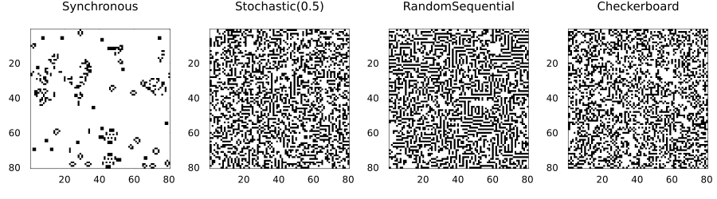
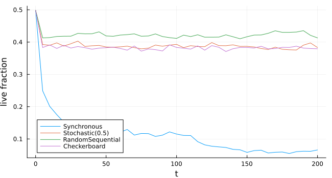
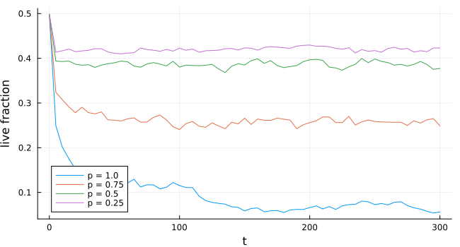
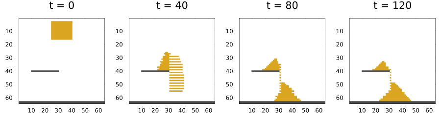
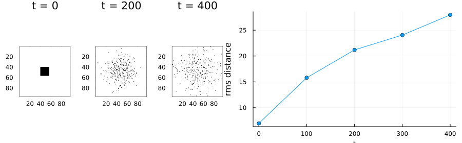

Update schemes
Simon Frost
- Overview
- The same rule, four schemes
- Synchrony artefacts: majority voting
- Stochastic updating
- Block rules and the Margolus scheme
Overview
A rule says what a cell becomes; an update scheme says when. In SciML terms the scheme is the algorithm passed to solve:
| scheme | what happens in one step | backends |
|---|---|---|
Synchronous() | every cell updates at once from the previous state | all |
Stochastic(p) | each cell updates with probability p, the rest keep their state | all |
Checkerboard() | cells with even index sum update, then the odd ones | all lattice backends |
RandomSequential() | cells update one at a time in a random order, in place | CPU |
Margolus() | 2 × 2 blocks update together, the partition shifting each step | CPU |
Synchronous updating is the classic definition, but it is an idealisation: real organisms do not all act at the same instant, and some patterns of synchronous automata are artefacts of perfect synchrony.
ENV["GKSwstype"] = "100"
using CellularAutomataCore
using Plots
using RandomThe same rule, four schemes
The Game of Life from one random soup, under each scheme:
soup = Int8.(rand(Xoshiro(1), 0:1, 80, 80))
schemes = ["Synchronous" => Synchronous(), "Stochastic(0.5)" => Stochastic(0.5),
"RandomSequential" => RandomSequential(), "Checkerboard" => Checkerboard()]
sols = [name => solve(CAProblem(Life(), soup, 200; seed=1), alg; saveat=5)
for (name, alg) in schemes]
plot([plot(sol; c=:binary, colorbar=false, title=name, titlefontsize=10) for (name, sol) in sols]...;
layout=(1, 4), size=(900, 250))
plt = plot(; xlabel="t", ylabel="live fraction", size=(650, 350))
for (name, sol) in sols
plot!(plt, sol.t, [count(==(1), u) / length(u) for u in sol.u]; label=name)
end
plt
Synchronous Life burns down to a sparse scattering of still lifes and oscillators, about 6% of cells alive after 200 steps. All three asynchronous schemes instead settle quickly at a much higher, fluctuating density of around 40%: Life’s characteristic structures depend on perfect synchrony, and without it the rule behaves like a noisy, space-filling growth process.
Synchrony artefacts: majority voting
In a majority-vote rule each cell takes the majority state of itself and its four von Neumann neighbours. Started from a perfect checkerboard, every cell sees four neighbours in the opposite state:
majority = LocalRule(VonNeumann(1)) do cell, nbrs, ctx
cell + sum(nbrs) >= 3 ? one(cell) : zero(cell)
end
checker = Int8[isodd(i + j) for i in 1:60, j in 1:60]
changed(sol) = count(sol.u[end] .!= sol.u[end - 1])
for alg in (Synchronous(), Checkerboard(), RandomSequential())
sol = solve(CAProblem(majority, checker, 50; seed=2), alg)
println(rpad(nameof(typeof(alg)), 18), "cells changing in the last step: ", changed(sol))
endSynchronous cells changing in the last step: 3600
Checkerboard cells changing in the last step: 0
RandomSequential cells changing in the last step: 0Synchronously, every cell of the checkerboard sees four neighbours in the opposite state and flips, so all 3600 cells change at every step, for ever: an artefact of perfect synchrony. Under Checkerboard and RandomSequential updating the first cells to update change the neighbourhoods of the later ones, and the pattern freezes.
Stochastic updating
Stochastic(p) is asynchrony that still runs in parallel: in each step a random fraction p of cells updates. Each cell’s coin is its draw number 0, so the run is reproducible on every backend. As p falls, Life’s dynamics slow and change character:
plt = plot(; xlabel="t", ylabel="live fraction", size=(650, 350))
for p in (1.0, 0.75, 0.5, 0.25)
sol = solve(CAProblem(Life(), soup, 300; seed=3), Stochastic(p); saveat=5)
plot!(plt, sol.t, [count(==(1), u) / length(u) for u in sol.u]; label="p = $p")
end
plt
Block rules and the Margolus scheme
Some processes are easier to write for a block of cells than for one cell: a particle that moves must leave one cell and enter another in the same step. The Margolus scheme cuts the lattice into 2 × 2 blocks; a BlockRule maps each block’s four states, given as (top_left, bottom_left, top_right, bottom_right), to its new states, and the partition shifts by one cell diagonally every step so that blocks overlap over time. Whatever the rule conserves within a block, it conserves globally.
Falling sand
Here 1 is sand, 2 is wall and 0 is empty. Within a block, sand falls into an empty cell below it, and otherwise slides diagonally downwards if it can:
falling_sand = BlockRule() do block, ctx
tl, bl, tr, br = block
if tl == 1 && bl == 0
tl, bl = bl, tl
end
if tr == 1 && br == 0
tr, br = br, tr
end
if tl == 1 && br == 0 && bl != 0 && tr != 1
tl, br = br, tl
elseif tr == 1 && bl == 0 && br != 0 && tl != 1
tr, bl = bl, tr
end
return (tl, bl, tr, br)
end
n = 64
u = zeros(Int8, n, n)
u[(end - 1):end, :] .= 2 # floor
u[40, 10:30] .= 2 # a shelf
u[3:16, 25:40] .= 1 # a block of sand
sol = solve(CAProblem(falling_sand, u, 120), Margolus(); saveat=40)
plot([plot(sol; snapshot=i, c=[:white, :goldenrod, :grey30], colorbar=false) for i in 1:4]...;
layout=(1, 4), size=(900, 250))
The amount of sand never changes:
[count(==(1), x) for x in sol.u]4-element Vector{Int64}:
224
224
224
224Diffusion by random rotation
Rotating each block a quarter turn clockwise or anticlockwise at random is a lattice gas that diffuses: particles spread out but are never created or destroyed. The coin for each block comes from its context, so the run is reproducible.
rotate = BlockRule() do b, ctx
tl, bl, tr, br = b
bernoulli(ctx, 0.5) ? (tr, tl, br, bl) : (bl, br, tl, tr)
end
u = zeros(Int8, 96, 96)
u[40:56, 40:56] .= 1
sol = solve(CAProblem(rotate, u, 400; seed=4), Margolus(); saveat=100)
spread(x) = sqrt(sum(((Tuple(I)[1] - 48.5)^2 + (Tuple(I)[2] - 48.5)^2) * x[I]
for I in CartesianIndices(x)) / sum(x))
plot(plot([plot(sol; snapshot=i, c=:binary, colorbar=false) for i in (1, 3, 5)]...;
layout=(1, 3)),
plot(sol.t, spread.(sol.u); marker=:circle, xlabel="t", ylabel="rms distance",
legend=false);
layout=(1, 2), size=(900, 280))
[sum(x) for x in sol.u]5-element Vector{Int64}:
289
289
289
289
289The particle count stays at 289 while the cloud spreads, and the mean squared distance from the centre grows roughly linearly in time, as for diffusion.